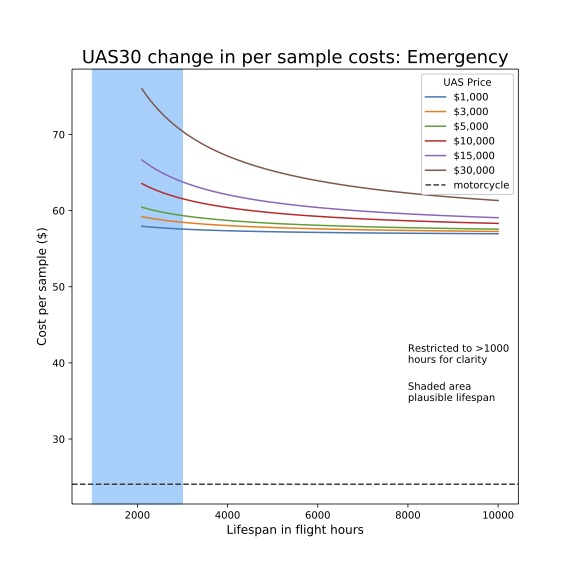

|  |
Our team of consultants have over 1,000 professional years working across sub-Saharan Africa.
We have experience working with non-profits, governments and academia. Physician Health Economist
with clinical, research and leadership experience including coordinating complex
multidisciplinary projects.
Effectively applies diverse clinical and analytic skillset to achieve project success.
Technical proficiencies include health economic study design, econometrics,
decision-analytic modelling, stochastic frontier analysis, hierarchical and
linear modelling, Monte Carlo simulations, mathematical epidemiology, and program design and evaluation.
|